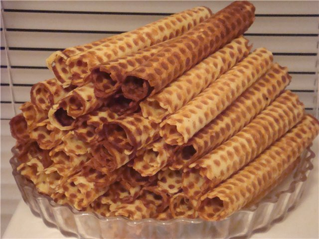

Table of Content:
Description:
The taste of tender, sweet and crunchy waffle tubes is familiar to all of us from childhood. This appetizing dessert has become a favorite delicacy of many children, and adults will love these delicacies. You can cook incense sticks at home with a waffle iron. Suitable for both electric and Soviet waffle makers for baking waffles on the stove
Ingredients:
- 100 gr. Margarine / Oil
- 0.5 cups of Sugar
- 3 \ 4 glasses of Milk
- 1 cup Flour
- 2 Chicken egg
Directions:
- Melt Margarine / Oil in a Waffle iron
- Pour the mass on the waffle iron
- Fry
- PROFIT
Result:
